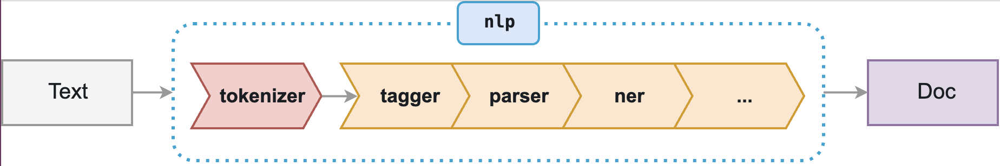

Working with Tweets
Contents
Working with Tweets#
In this notebook, we will delve into the analysis of tweet contents.
We consider the dataset of tweets from Elon Musk, SpaceX and Tesla founder, and ask the following questions:
What is Elon most actively tweeting about?
Who is Elon most frequently referring to?
We will explore how to work with the contents of tweets.
# imports
import os
import pandas as pd
import numpy as np
import seaborn as sns
import matplotlib.pyplot as plt
---------------------------------------------------------------------------
ModuleNotFoundError Traceback (most recent call last)
Input In [1], in <cell line: 6>()
4 import pandas as pd
5 import numpy as np
----> 6 import seaborn as sns
7 import matplotlib.pyplot as plt
ModuleNotFoundError: No module named 'seaborn'
Let’s get some basics (or a refresher) of working with texts in Python. Texts are sequences of discrete symbols (words or, more generically, tokens).
Import the dataset#
Note
More info on how to harvest tweets automatically, see Notebook 6.
Let us import the Elon Musk’s tweets dataset in memory.
# Import the dataset using Pandas, and create a data frame
file_path = 'data/elonmusk_tweets.csv'
df_elon = pd.read_csv(file_path, encoding="utf-8")
df_elon.head(10)
| id | created_at | text | |
|---|---|---|---|
| 0 | 849636868052275200 | 2017-04-05 14:56:29 | And so the robots spared humanity ... https://... |
| 1 | 848988730585096192 | 2017-04-03 20:01:01 | @ForIn2020 @waltmossberg @mims @defcon_5 Exact... |
| 2 | 848943072423497728 | 2017-04-03 16:59:35 | @waltmossberg @mims @defcon_5 Et tu, Walt? |
| 3 | 848935705057280001 | 2017-04-03 16:30:19 | Stormy weather in Shortville ... |
| 4 | 848416049573658624 | 2017-04-02 06:05:23 | @DaveLeeBBC @verge Coal is dying due to nat ga... |
| 5 | 848415731502923777 | 2017-04-02 06:04:07 | @Lexxxzis It's just a helicopter in helicopter... |
| 6 | 848415356263702528 | 2017-04-02 06:02:38 | @verge It won't matter |
| 7 | 848398971139629057 | 2017-04-02 04:57:31 | @SuperCoolCube Pretty good |
| 8 | 848244577521647616 | 2017-04-01 18:44:01 | Why did we waste so much time developing silly... |
| 9 | 848243350993895424 | 2017-04-01 18:39:09 | Technology breakthrough: turns out chemtrails ... |
df_elon.tail(5)
| id | created_at | text | |
|---|---|---|---|
| 2814 | 142881284019060736 | 2011-12-03 08:22:07 | That was a total non sequitur btw |
| 2815 | 142880871391838208 | 2011-12-03 08:20:28 | Great Voltaire quote, arguably better than Twa... |
| 2816 | 142188458125963264 | 2011-12-01 10:29:04 | I made the volume on the Model S http://t.co/w... |
| 2817 | 142179928203460608 | 2011-12-01 09:55:11 | Went to Iceland on Sat to ride bumper cars on ... |
| 2818 | 15434727182 | 2010-06-04 18:31:57 | Please ignore prior tweets, as that was someon... |
df_elon.shape # (number of rows, number of columns)
(2819, 3)
tweets = df_elon["text"]
tweets_list = list(tweets) # convert to Python list
for tweet in tweets_list[:10]:
print(tweet)
And so the robots spared humanity ... https://t.co/v7JUJQWfCv
@ForIn2020 @waltmossberg @mims @defcon_5 Exactly. Tesla is absurdly overvalued if based on the past, but that's irr… https://t.co/qQcTqkzgMl
@waltmossberg @mims @defcon_5 Et tu, Walt?
Stormy weather in Shortville ...
@DaveLeeBBC @verge Coal is dying due to nat gas fracking. It's basically dead.
@Lexxxzis It's just a helicopter in helicopter's clothing
@verge It won't matter
@SuperCoolCube Pretty good
Why did we waste so much time developing silly rockets? Damn you, aliens! So obtuse! You have all this crazy tech, but can't speak English!?
Technology breakthrough: turns out chemtrails are actually a message from time-traveling aliens describing the secret of teleportation
Working with tweet contents#
# import some of the most popular libraries for NLP in Python
import nltk
import string
# import sklearn # for machine learning
---------------------------------------------------------------------------
ModuleNotFoundError Traceback (most recent call last)
Input In [7], in <cell line: 2>()
1 # import some of the most popular libraries for NLP in Python
----> 2 import nltk
3 import string
ModuleNotFoundError: No module named 'nltk'
Tip
If it is the first time you run nltk, it could be that you have to download its materials first. You only have to do this once. The error tells you which package needs to be downloaded.
# For instance, run this once:
# nltk.download('punkt')
A typical NLP pipeline might look like the following:
Tokenization: split a text into tokens.
Filtering: remove some of the tokens if not needed (e.g., punctuation). If and how to remove is task dependent.
Tagger, parser: syntactic structure.
NER (Named Entity Recognition): find named entities.
…
More on this can be found in Notebook 7.
Tokenization: splitting a text into constituent tokens.#
A tokenizer takes a string and outputs a list of tokens.
# NLTK provides us with a tokenizers for tweets
from nltk.tokenize import TweetTokenizer, word_tokenize
tokenizer = TweetTokenizer(preserve_case=True, reduce_len=False, strip_handles=False)
---------------------------------------------------------------------------
ModuleNotFoundError Traceback (most recent call last)
Input In [9], in <cell line: 3>()
1 # NLTK provides us with a tokenizers for tweets
----> 3 from nltk.tokenize import TweetTokenizer, word_tokenize
5 tokenizer = TweetTokenizer(preserve_case=True, reduce_len=False, strip_handles=False)
ModuleNotFoundError: No module named 'nltk'
example_tweet = df_elon.text[1]
print(example_tweet)
@ForIn2020 @waltmossberg @mims @defcon_5 Exactly. Tesla is absurdly overvalued if based on the past, but that's irr… https://t.co/qQcTqkzgMl
We compare here two tokenizers: one for general English texts, and one specialized for tweets.
# This one was defined above and is the 'TweetTokenizer'
result1 = tokenizer.tokenize(example_tweet)
print(result1)
print("\n======\n")
# This is a 'normal' tokenizer
result2 = word_tokenize(example_tweet)
print(result2)
---------------------------------------------------------------------------
NameError Traceback (most recent call last)
Input In [11], in <cell line: 2>()
1 # This one was defined above and is the 'TweetTokenizer'
----> 2 result1 = tokenizer.tokenize(example_tweet)
3 print(result1)
5 print("\n======\n")
NameError: name 'tokenizer' is not defined
Question: can you spot what the Twitter tokenizer is doing instead of a standard one?
Filtering unnecessary tokens#
string.punctuation
---------------------------------------------------------------------------
NameError Traceback (most recent call last)
Input In [12], in <cell line: 1>()
----> 1 string.punctuation
NameError: name 'string' is not defined
# Some more pre-processing
tokenizer = TweetTokenizer(preserve_case=True, reduce_len=False, strip_handles=False)
def filter_tweet(tokens):
"""
Normalize a tweet's text by removing punctuation tokens and URls.
Args:
tokens (list): List of tokens from a tokenizer
Returns:
list: List of non-punctuation and URL tokens
"""
normalized = []
for token in tokens:
if token in string.punctuation:
continue
elif len(token) <= 3:
continue
elif token.startswith(('http', 'www')):
continue
else:
normalized.append(token)
return normalized
def tokenize_tweet(tweet, tokenizer=tokenizer):
# This gives a list of tokens
tokens = tokenizer.tokenize(tweet)
filtered_tokens = filter_tweet(tokens)
# This returns it back to a string
normalized_tweet = " ".join(filtered_tokens)
return normalized_tweet
---------------------------------------------------------------------------
NameError Traceback (most recent call last)
Input In [13], in <cell line: 3>()
1 # Some more pre-processing
----> 3 tokenizer = TweetTokenizer(preserve_case=True, reduce_len=False, strip_handles=False)
5 def filter_tweet(tokens):
6 """
7 Normalize a tweet's text by removing punctuation tokens and URls.
8
(...)
13 list: List of non-punctuation and URL tokens
14 """
NameError: name 'TweetTokenizer' is not defined
print(result1) # recall from some cells above
print("======")
print(filter_tweet(result1)) # the result of our normalization function
---------------------------------------------------------------------------
NameError Traceback (most recent call last)
Input In [14], in <cell line: 1>()
----> 1 print(result1) # recall from some cells above
2 print("======")
3 print(filter_tweet(result1))
NameError: name 'result1' is not defined
Now, add a column with a normalized version of the text column.
Let’s call it clean_text. We get this by applying (using Pandas’ .apply() method) our just written function on every value of the column.
df_elon["clean_text"] = df_elon["text"].apply(tokenize_tweet)
---------------------------------------------------------------------------
NameError Traceback (most recent call last)
Input In [15], in <cell line: 1>()
----> 1 df_elon["clean_text"] = df_elon["text"].apply(tokenize_tweet)
NameError: name 'tokenize_tweet' is not defined
df_elon.head(5)
| id | created_at | text | |
|---|---|---|---|
| 0 | 849636868052275200 | 2017-04-05 14:56:29 | And so the robots spared humanity ... https://... |
| 1 | 848988730585096192 | 2017-04-03 20:01:01 | @ForIn2020 @waltmossberg @mims @defcon_5 Exact... |
| 2 | 848943072423497728 | 2017-04-03 16:59:35 | @waltmossberg @mims @defcon_5 Et tu, Walt? |
| 3 | 848935705057280001 | 2017-04-03 16:30:19 | Stormy weather in Shortville ... |
| 4 | 848416049573658624 | 2017-04-02 06:05:23 | @DaveLeeBBC @verge Coal is dying due to nat ga... |
# Save cleaned up version
# df_elon.to_csv("stuff/df_elon.csv", index=False)
Building a dictionary with token occurrences#
We want to build a dictionary of unique tokens, containing the number of times they appear in the corpus.
from collections import Counter
all_tokens = [] # empty list
for tweet in df_elon["clean_text"]:
all_tokens += tweet.split()
---------------------------------------------------------------------------
KeyError Traceback (most recent call last)
File ~/.local/lib/python3.8/site-packages/pandas/core/indexes/base.py:3621, in Index.get_loc(self, key, method, tolerance)
3620 try:
-> 3621 return self._engine.get_loc(casted_key)
3622 except KeyError as err:
File ~/.local/lib/python3.8/site-packages/pandas/_libs/index.pyx:136, in pandas._libs.index.IndexEngine.get_loc()
File ~/.local/lib/python3.8/site-packages/pandas/_libs/index.pyx:163, in pandas._libs.index.IndexEngine.get_loc()
File pandas/_libs/hashtable_class_helper.pxi:5198, in pandas._libs.hashtable.PyObjectHashTable.get_item()
File pandas/_libs/hashtable_class_helper.pxi:5206, in pandas._libs.hashtable.PyObjectHashTable.get_item()
KeyError: 'clean_text'
The above exception was the direct cause of the following exception:
KeyError Traceback (most recent call last)
Input In [18], in <cell line: 5>()
1 from collections import Counter
3 all_tokens = [] # empty list
----> 5 for tweet in df_elon["clean_text"]:
6 all_tokens += tweet.split()
File ~/.local/lib/python3.8/site-packages/pandas/core/frame.py:3505, in DataFrame.__getitem__(self, key)
3503 if self.columns.nlevels > 1:
3504 return self._getitem_multilevel(key)
-> 3505 indexer = self.columns.get_loc(key)
3506 if is_integer(indexer):
3507 indexer = [indexer]
File ~/.local/lib/python3.8/site-packages/pandas/core/indexes/base.py:3623, in Index.get_loc(self, key, method, tolerance)
3621 return self._engine.get_loc(casted_key)
3622 except KeyError as err:
-> 3623 raise KeyError(key) from err
3624 except TypeError:
3625 # If we have a listlike key, _check_indexing_error will raise
3626 # InvalidIndexError. Otherwise we fall through and re-raise
3627 # the TypeError.
3628 self._check_indexing_error(key)
KeyError: 'clean_text'
all_tokens[:10]
[]
counter = Counter(all_tokens)
counter["robots"]
0
Quiz#
Find the tokens most used by Elon.
Find the Twitter users most referred to by Elon
Tip
Use the @ handler to spot users.
# Your code here
# Your code here
Data visualization#
The pandas methods provide integration with the plotting functionalities provided by the matplotlib library.
This seamless integration – which is very nice! – hides away from users some of the complexities of matplotlib.
However, as there cases where advanced customizations are needed, it’s useful to learn the high-level plotting functionalities of pandas or seaborn as well as being aware of how to perform more advanced customizations by means of matplotlib.
Very useful matplotlib cheatsheet.
And more information on Seaborn here: https://seaborn.pydata.org/
import numpy as np
import matplotlib.pyplot as plt
import seaborn as sns
# Use seaborn style defaults and set the default figure size
sns.set(rc={'figure.figsize':(11, 5)})
---------------------------------------------------------------------------
ModuleNotFoundError Traceback (most recent call last)
Input In [25], in <cell line: 1>()
----> 1 import seaborn as sns
3 # Use seaborn style defaults and set the default figure size
4 sns.set(rc={'figure.figsize':(11, 5)})
ModuleNotFoundError: No module named 'seaborn'
Let’s plot the number of tweets mentioning one of the top 10 tokens over time.
df_elon.head(5)
| id | created_at | text | |
|---|---|---|---|
| 0 | 849636868052275200 | 2017-04-05 14:56:29 | And so the robots spared humanity ... https://... |
| 1 | 848988730585096192 | 2017-04-03 20:01:01 | @ForIn2020 @waltmossberg @mims @defcon_5 Exact... |
| 2 | 848943072423497728 | 2017-04-03 16:59:35 | @waltmossberg @mims @defcon_5 Et tu, Walt? |
| 3 | 848935705057280001 | 2017-04-03 16:30:19 | Stormy weather in Shortville ... |
| 4 | 848416049573658624 | 2017-04-02 06:05:23 | @DaveLeeBBC @verge Coal is dying due to nat ga... |
Right now, the created_at column is of type string. Let’s convert it to a datetime datatype that can be interpreted as object by Pandas and Python.
# Convert the created_at column to datetime
df_elon['created_at'] = pd.to_datetime(df_elon['created_at'])
df_elon.head(5)
| id | created_at | text | |
|---|---|---|---|
| 0 | 849636868052275200 | 2017-04-05 14:56:29 | And so the robots spared humanity ... https://... |
| 1 | 848988730585096192 | 2017-04-03 20:01:01 | @ForIn2020 @waltmossberg @mims @defcon_5 Exact... |
| 2 | 848943072423497728 | 2017-04-03 16:59:35 | @waltmossberg @mims @defcon_5 Et tu, Walt? |
| 3 | 848935705057280001 | 2017-04-03 16:30:19 | Stormy weather in Shortville ... |
| 4 | 848416049573658624 | 2017-04-02 06:05:23 | @DaveLeeBBC @verge Coal is dying due to nat ga... |
Visually, nothing has changed. But, since the element in the created_at column is now a datetime object, we can ask for separate bits of this datetimestamp, such as the year only:
# Make a new column with only the year
df_elon["year"] = df_elon['created_at'].dt.year
df_elon.head()
| id | created_at | text | year | |
|---|---|---|---|---|
| 0 | 849636868052275200 | 2017-04-05 14:56:29 | And so the robots spared humanity ... https://... | 2017 |
| 1 | 848988730585096192 | 2017-04-03 20:01:01 | @ForIn2020 @waltmossberg @mims @defcon_5 Exact... | 2017 |
| 2 | 848943072423497728 | 2017-04-03 16:59:35 | @waltmossberg @mims @defcon_5 Et tu, Walt? | 2017 |
| 3 | 848935705057280001 | 2017-04-03 16:30:19 | Stormy weather in Shortville ... | 2017 |
| 4 | 848416049573658624 | 2017-04-02 06:05:23 | @DaveLeeBBC @verge Coal is dying due to nat ga... | 2017 |
Now, make another column that either contains the frequency of the token ‘Tesla’ in the tweet.
You can do this by using pure Python:
tesla_in_tweet = []
for tweet in df_elon['clean_text']:
tesla_in_tweet.append(tweet.count('Tesla'))
df_elon['tesla_in_tweet'] = tesla_in_tweet
---------------------------------------------------------------------------
KeyError Traceback (most recent call last)
File ~/.local/lib/python3.8/site-packages/pandas/core/indexes/base.py:3621, in Index.get_loc(self, key, method, tolerance)
3620 try:
-> 3621 return self._engine.get_loc(casted_key)
3622 except KeyError as err:
File ~/.local/lib/python3.8/site-packages/pandas/_libs/index.pyx:136, in pandas._libs.index.IndexEngine.get_loc()
File ~/.local/lib/python3.8/site-packages/pandas/_libs/index.pyx:163, in pandas._libs.index.IndexEngine.get_loc()
File pandas/_libs/hashtable_class_helper.pxi:5198, in pandas._libs.hashtable.PyObjectHashTable.get_item()
File pandas/_libs/hashtable_class_helper.pxi:5206, in pandas._libs.hashtable.PyObjectHashTable.get_item()
KeyError: 'clean_text'
The above exception was the direct cause of the following exception:
KeyError Traceback (most recent call last)
Input In [31], in <cell line: 3>()
1 tesla_in_tweet = []
----> 3 for tweet in df_elon['clean_text']:
4 tesla_in_tweet.append(tweet.count('Tesla'))
6 df_elon['tesla_in_tweet'] = tesla_in_tweet
File ~/.local/lib/python3.8/site-packages/pandas/core/frame.py:3505, in DataFrame.__getitem__(self, key)
3503 if self.columns.nlevels > 1:
3504 return self._getitem_multilevel(key)
-> 3505 indexer = self.columns.get_loc(key)
3506 if is_integer(indexer):
3507 indexer = [indexer]
File ~/.local/lib/python3.8/site-packages/pandas/core/indexes/base.py:3623, in Index.get_loc(self, key, method, tolerance)
3621 return self._engine.get_loc(casted_key)
3622 except KeyError as err:
-> 3623 raise KeyError(key) from err
3624 except TypeError:
3625 # If we have a listlike key, _check_indexing_error will raise
3626 # InvalidIndexError. Otherwise we fall through and re-raise
3627 # the TypeError.
3628 self._check_indexing_error(key)
KeyError: 'clean_text'
… and the variant with a list comprehension:
tesla_in_tweet = [tweet.count('Tesla') for tweet in df_elon['clean_text']]
df_elon['tesla_in_tweet'] = tesla_in_tweet
---------------------------------------------------------------------------
KeyError Traceback (most recent call last)
File ~/.local/lib/python3.8/site-packages/pandas/core/indexes/base.py:3621, in Index.get_loc(self, key, method, tolerance)
3620 try:
-> 3621 return self._engine.get_loc(casted_key)
3622 except KeyError as err:
File ~/.local/lib/python3.8/site-packages/pandas/_libs/index.pyx:136, in pandas._libs.index.IndexEngine.get_loc()
File ~/.local/lib/python3.8/site-packages/pandas/_libs/index.pyx:163, in pandas._libs.index.IndexEngine.get_loc()
File pandas/_libs/hashtable_class_helper.pxi:5198, in pandas._libs.hashtable.PyObjectHashTable.get_item()
File pandas/_libs/hashtable_class_helper.pxi:5206, in pandas._libs.hashtable.PyObjectHashTable.get_item()
KeyError: 'clean_text'
The above exception was the direct cause of the following exception:
KeyError Traceback (most recent call last)
Input In [32], in <cell line: 1>()
----> 1 tesla_in_tweet = [tweet.count('Tesla') for tweet in df_elon['clean_text']]
2 df_elon['tesla_in_tweet'] = tesla_in_tweet
File ~/.local/lib/python3.8/site-packages/pandas/core/frame.py:3505, in DataFrame.__getitem__(self, key)
3503 if self.columns.nlevels > 1:
3504 return self._getitem_multilevel(key)
-> 3505 indexer = self.columns.get_loc(key)
3506 if is_integer(indexer):
3507 indexer = [indexer]
File ~/.local/lib/python3.8/site-packages/pandas/core/indexes/base.py:3623, in Index.get_loc(self, key, method, tolerance)
3621 return self._engine.get_loc(casted_key)
3622 except KeyError as err:
-> 3623 raise KeyError(key) from err
3624 except TypeError:
3625 # If we have a listlike key, _check_indexing_error will raise
3626 # InvalidIndexError. Otherwise we fall through and re-raise
3627 # the TypeError.
3628 self._check_indexing_error(key)
KeyError: 'clean_text'
Or, by using a built-in Pandas method:
df_elon['tesla_in_tweet'] = df_elon['clean_text'].str.count('Tesla')
---------------------------------------------------------------------------
KeyError Traceback (most recent call last)
File ~/.local/lib/python3.8/site-packages/pandas/core/indexes/base.py:3621, in Index.get_loc(self, key, method, tolerance)
3620 try:
-> 3621 return self._engine.get_loc(casted_key)
3622 except KeyError as err:
File ~/.local/lib/python3.8/site-packages/pandas/_libs/index.pyx:136, in pandas._libs.index.IndexEngine.get_loc()
File ~/.local/lib/python3.8/site-packages/pandas/_libs/index.pyx:163, in pandas._libs.index.IndexEngine.get_loc()
File pandas/_libs/hashtable_class_helper.pxi:5198, in pandas._libs.hashtable.PyObjectHashTable.get_item()
File pandas/_libs/hashtable_class_helper.pxi:5206, in pandas._libs.hashtable.PyObjectHashTable.get_item()
KeyError: 'clean_text'
The above exception was the direct cause of the following exception:
KeyError Traceback (most recent call last)
Input In [33], in <cell line: 1>()
----> 1 df_elon['tesla_in_tweet'] = df_elon['clean_text'].str.count('Tesla')
File ~/.local/lib/python3.8/site-packages/pandas/core/frame.py:3505, in DataFrame.__getitem__(self, key)
3503 if self.columns.nlevels > 1:
3504 return self._getitem_multilevel(key)
-> 3505 indexer = self.columns.get_loc(key)
3506 if is_integer(indexer):
3507 indexer = [indexer]
File ~/.local/lib/python3.8/site-packages/pandas/core/indexes/base.py:3623, in Index.get_loc(self, key, method, tolerance)
3621 return self._engine.get_loc(casted_key)
3622 except KeyError as err:
-> 3623 raise KeyError(key) from err
3624 except TypeError:
3625 # If we have a listlike key, _check_indexing_error will raise
3626 # InvalidIndexError. Otherwise we fall through and re-raise
3627 # the TypeError.
3628 self._check_indexing_error(key)
KeyError: 'clean_text'
The result is yet an extra column:
df_elon.head(5)
| id | created_at | text | year | |
|---|---|---|---|---|
| 0 | 849636868052275200 | 2017-04-05 14:56:29 | And so the robots spared humanity ... https://... | 2017 |
| 1 | 848988730585096192 | 2017-04-03 20:01:01 | @ForIn2020 @waltmossberg @mims @defcon_5 Exact... | 2017 |
| 2 | 848943072423497728 | 2017-04-03 16:59:35 | @waltmossberg @mims @defcon_5 Et tu, Walt? | 2017 |
| 3 | 848935705057280001 | 2017-04-03 16:30:19 | Stormy weather in Shortville ... | 2017 |
| 4 | 848416049573658624 | 2017-04-02 06:05:23 | @DaveLeeBBC @verge Coal is dying due to nat ga... | 2017 |
Then, let’s plot this as a bar plot. What we do:
Group everything by the value in the ‘year’ column
Select only the ‘tesla_in_tweet’ column
Sum the values (this is done per group [=per year])
Inspect the result
Call
.plot(kind='bar')on the Series.
What is returned is automatically displayed by Jupyter notebooks
tesla_per_year = df_elon.groupby('year')['tesla_in_tweet'].sum()
tesla_per_year
---------------------------------------------------------------------------
KeyError Traceback (most recent call last)
Input In [35], in <cell line: 1>()
----> 1 tesla_per_year = df_elon.groupby('year')['tesla_in_tweet'].sum()
2 tesla_per_year
File ~/.local/lib/python3.8/site-packages/pandas/core/groupby/generic.py:1338, in DataFrameGroupBy.__getitem__(self, key)
1329 if isinstance(key, tuple) and len(key) > 1:
1330 # if len == 1, then it becomes a SeriesGroupBy and this is actually
1331 # valid syntax, so don't raise warning
1332 warnings.warn(
1333 "Indexing with multiple keys (implicitly converted to a tuple "
1334 "of keys) will be deprecated, use a list instead.",
1335 FutureWarning,
1336 stacklevel=find_stack_level(),
1337 )
-> 1338 return super().__getitem__(key)
File ~/.local/lib/python3.8/site-packages/pandas/core/base.py:250, in SelectionMixin.__getitem__(self, key)
248 else:
249 if key not in self.obj:
--> 250 raise KeyError(f"Column not found: {key}")
251 subset = self.obj[key]
252 ndim = subset.ndim
KeyError: 'Column not found: tesla_in_tweet'
tesla_per_year.plot(kind='bar')
---------------------------------------------------------------------------
NameError Traceback (most recent call last)
Input In [36], in <cell line: 1>()
----> 1 tesla_per_year.plot(kind='bar')
NameError: name 'tesla_per_year' is not defined
Alternatively, you can give this Series to Seaborn:
sns.barplot(x=tesla_per_year.index, y=tesla_per_year.values, color="skyblue")
---------------------------------------------------------------------------
NameError Traceback (most recent call last)
Input In [37], in <cell line: 1>()
----> 1 sns.barplot(x=tesla_per_year.index, y=tesla_per_year.values, color="skyblue")
NameError: name 'sns' is not defined
Some extra styling, a title and a y-axis label. You can even save the result, for instance as .pdf.
sns.barplot(x=tesla_per_year.index, y=tesla_per_year.values, color="skyblue")
plt.xlabel("Year", fontsize=14)
plt.ylabel("Count", fontsize=14)
plt.title("Number of tweets mentioning Tesla", fontsize=14)
plt.tight_layout()
plt.savefig("stuff/elon_plot.pdf")
---------------------------------------------------------------------------
NameError Traceback (most recent call last)
Input In [38], in <cell line: 1>()
----> 1 sns.barplot(x=tesla_per_year.index, y=tesla_per_year.values, color="skyblue")
3 plt.xlabel("Year", fontsize=14)
4 plt.ylabel("Count", fontsize=14)
NameError: name 'sns' is not defined
Another question: how many tweets are there per month over time?
We need to change the index and group. Let’s make the datetimestamp the index of our DataFrame.
df_elon = df_elon.set_index('created_at')
df_elon.head(5)
| id | text | year | |
|---|---|---|---|
| created_at | |||
| 2017-04-05 14:56:29 | 849636868052275200 | And so the robots spared humanity ... https://... | 2017 |
| 2017-04-03 20:01:01 | 848988730585096192 | @ForIn2020 @waltmossberg @mims @defcon_5 Exact... | 2017 |
| 2017-04-03 16:59:35 | 848943072423497728 | @waltmossberg @mims @defcon_5 Et tu, Walt? | 2017 |
| 2017-04-03 16:30:19 | 848935705057280001 | Stormy weather in Shortville ... | 2017 |
| 2017-04-02 06:05:23 | 848416049573658624 | @DaveLeeBBC @verge Coal is dying due to nat ga... | 2017 |
Pandas has a Grouper method that for instance allows you to easily work with datetimestamps. See https://pandas.pydata.org/pandas-docs/stable/reference/api/pandas.Grouper.html for some examples.
We use it to group per month which we do by specifying freq='M'. In steps:
First, we group by the month using the
pd.Grouper(freq='M'))methodThen we count the number of rows per month using
.count()Since we are only interested in the count, we can select any row, for instance ‘id’
tweets_per_month = df_elon.groupby(pd.Grouper(freq='M')).count()['id']
tweets_per_month
created_at
2010-06-30 1
2010-07-31 0
2010-08-31 0
2010-09-30 0
2010-10-31 0
...
2016-12-31 50
2017-01-31 107
2017-02-28 137
2017-03-31 120
2017-04-30 13
Freq: M, Name: id, Length: 83, dtype: int64
tweets_per_month.plot()
<AxesSubplot:xlabel='created_at'>
Remark: there is much more to this than plotting. Take a loot at the Seaborn or Matplotlib galleries for some compelling examples.
Anatomy of a plot (optional)#
# First we create the figure, which is the
# container where all plots reside
fig = plt.figure(figsize=(10, 10))
ax1 = fig.add_subplot(2, 2, 1)
plt.plot(np.random.randn(50).cumsum(), 'k--')
ax2 = fig.add_subplot(2, 2, 2)
ax3 = fig.add_subplot(2, 2, 3)
ax4 = fig.add_subplot(2, 2, 4)
plt.show()
Each plot resides within a Figure object.
Each subsplot resides within an AxesSubplot object.
fig, axes = plt.subplots(nrows=2, ncols=2)
axes[0,1].plot(np.random.randn(50), 'r--')
axes[0,1].plot(np.random.randn(50), 'b--')
axes[1,1].plot(np.random.randn(50), 'k--')
axes[1,0].plot(np.random.randn(50), '.')
axes[0,0].plot(np.random.randn(50), 'y-')
fig.set_size_inches(10, 10)
Exercise 1.#
With these tweets:
Plot the top n words together in a single figure, and show their trends over time.
Do the same for the top n users mentioned.
# Your code here